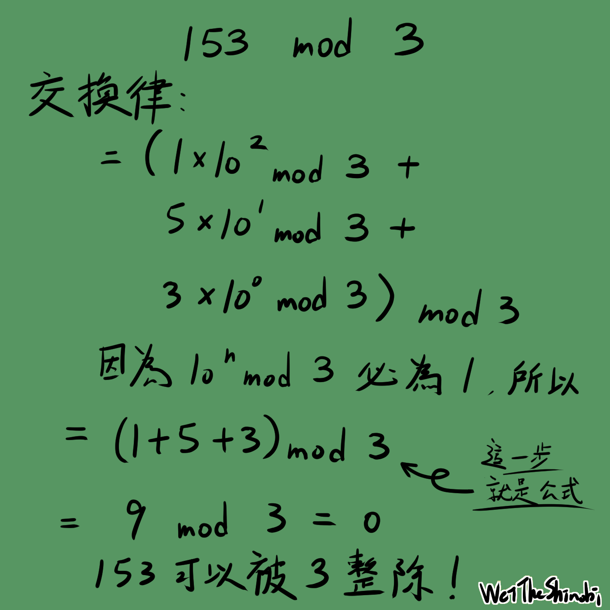

你有想過為什麼一個數能被3整除嗎
你有想過為什麼一個數能被3整除嗎
還記得小時候在數學課上學過，如果一個數的所有位數相加能被 3 整除，那它就是就是 3 的倍數。這個公式大家應該都記得，但你有想過為什麼嗎？它的原理何在？該怎麼解釋？本篇會用直白的口吻來帶大家了解這個小數學！

先了解取模
模除（modulo）即是兩數相除的餘數，根據除法原理，我們知道一個數可以被分成n = ax + b，所以n / a = x + b，可以知道n mod a = b，這就像是數學課會看到的8 / 3 = 2 ... 2這樣的式子。在一些程式語言中，你可以看到 mod 運算以%表示。取模是一個應用廣泛的運算，生活中常見的例子就是分組，舉例來說：一個班級要分成三組，每個人的號碼 mod 3，會發現只會得到 0, 1 或 2，這樣就成功分成三組了。小到計算最大公因數、大到密碼學都會用到取模。
數學課教的公式
數學課學到：一個數字的所有位數相加，只要計算這個數字 mod 3 是否等於 0，就能知道此數能否被 3 整除，如果用 153 為例：我們把1 + 5 + 3 = 9，因為 9 是 3 的倍數，所以 153 能被 3 整除。接下來我們來看看這是如何推論的。
所以如何推導
我們知道 mod 有交換律，即：
-
(a+b) mod c = [(a mod c) + (b mod c)] mod c -
ab mod c = [(a mod c)(b mod c)] mod c
以剛剛的 153 為例：
結語
恭喜你看完這篇文章，又學習到了有趣的小數學了，我想跟你說，你非常厲害喔！如果覺得很有趣的話，數論、離散數學是很好的學習方向，可以多多深入了解喔！
WeiTheShinobi